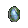
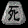

Improve Graphic Performance With A Glide
What A Glide Wrapper Does?
- Diablo II is optimized for Voodoo series video cards, which were popular among 3D gamers when it was released. Glide is the 3D graphics API for Voodoo cards, and D2 runs much faster in Glide mode than in other modes (Direct Draw/3D.) If you don't have a Voodoo, you can't select Glide mode.
- In short, a Glide wrapper lets other video cards than Voodoo work in Glide mode, to improve the graphic performance.
Which Glide Wrapper Do You Recommend?
- This Glide Wrapper is recommended in Eastern Sun forum Glide Wrapper thread.
http://www.svenswrapper.de/english/downloads.html
A slightly more detailed guide can be found in the E.S. Troubleshooting & Problem Solving FAQ thread here:
http://phrozenkeep.hugelaser.com/forum/viewtopic.php?t=54529
- You can find many other Glide Wrappers, too, but this one is optimized for Diablo II, and would work better.
- If you are running Windows Vista with the Aero-theme activated, the Glide Wrapper will not function by default due to OpenGL conflicts. You can go around this issue by configuring your Eastern Sun shortcut: Go to the compatibility-tab at the shortcut properties, and enable 'Disable desktop compositing'. This setting will disable the Vista Aero-theme every time you run ES from the shortcut, which allows the Glide Wrapper to run properly.
- NOTE: The 'test version of Sven's Wrapper includes an option to automatically tun off the effects needed to run properly under Windows Vista/7.
http://www.svenswrapper.de/english/text/testversion.html
General Tips
Repair/Recharge cost is very low in ES. You no longer have to worry about the recharge cost. Superior Runeworded items will never bankrupt you.
Other mercenaries than Act 2 mercenaries are also useful. All mercenaries have useful support skill(s) like an aura, warcries, etc.
Mercenaries hired in Hell has the same stats as the ones hired in Normal (Only the aura of the Act 2 mercenaries changes each difficulty). You can change your mercenary without losing their stats, so I recommend hiring each mercenary at least once to see how they work.
Weaken, Iron Maiden and Decrepify reduce monster's physical resist by 60% while Amplify Damage reduces it by 80%. Now Amplify Damage isn't the only melee curse to be considered.
Inner Sight also reduces monster's physical damage by 5-35% (more than 70% when fully synergized), and this works on top of another curse.
Damage Augmenter is a free bonus charm included in the starting items. All characters should have one. You can make one by a cube recipe for your old characters.
Wirt's Leg + Tome of Identify -> Damage Augmenter
Getting Started
Starting out in Eastern Sun for the first time, or playing untwinked can be quite a challenge. Here are a few tips that should make it easier:
Tactics
- You start out with a very low chance to hit, so go after easy targets like Fallen until you gain a couple levels.
- (Edit) All monsters' life was roughly doubled in R5, and characters are given 500 fulminating potions instead, which would let you gain a few levels with ease.
| Fallen |
2 |
|
Dark Spearwoman |
3 |
Fast |
| Quillrat |
2 |
|
Gargantuan Beast |
3 |
Stun |
| Zombie |
2 |
Slow |
Hungry Dead |
3 |
Slow |
| Dark Hunter |
3 |
Fast |
Skeleton |
3 |
|
- Please note even the weakest monsters have a twice higher level than you, and this level difference make it very difficult to hit monsters. Attack Rating would be given the highest priority.
- Don't be afraid to flee back to town and start a new game if you get too many monsters coming after you at once.
- Every character class can benefit from a javelin/shield combo early on. This gives you the benefit of ranged combat (thrown), or melee combat with the additional defense of a shield. Also, cubing any javelin/throwing/quiver by itself, resets the quantity to 255. Useful to remember if you are out in the wilderness and you get the low quantity warning.
Equipments
- Socketables: Don't be afraid to stick the socketables you find into a weapon or piece of armor...you can take them out anytime you want by putting the socketed item in your Horadric Cube together with a key. Nothing is destroyed, you get your gems, jewels, or runes back, as well as the item they were in.
- Gemwords/Runewords: Everyone can benefit from gemwords early on. If you fill all the sockets in a white item with the same type and quality of gem, you'll get a CtC skill as well as the listed bonuses. Many useful low level runewords are also available.
- Buying Gems: Wish you had more gems of a certain type? You can buy more from Akara, or make a pgem using Secret Recipie #14.
- Socket Weapons/Armor: Following list shows the maximum socket numbers of the items available in normal Act 1. Because socketables are so powerful and flexible, it's a good idea to stock one or two of maximum socket items when you find them at the shop, for you and your hireling. Please also note hirelings can equip gloves, belt and boots in ES.
| Melee Weapons |
2-3 |
Bows/Crossbows |
3 |
| Helms |
2 |
Gloves |
2 |
| Body Armor |
3 |
Belts |
2 |
| Shields |
3 |
Boots |
2 |
- 3 Socket Helms: If you need more sockets, the 3 socket Mask, etc. from Decipherers may be worth cubing. These are the only 3 socket helms available early on.
- Sash/Light Belt Upgrade: Any Sashes and Light Belts can be upgraded to a Belt by cubing with a Stamina Pot.
- Gambling: Gambling is much better in ES than in vanilla, you have a 5% chance each of getting a set or unique item. That means you have a 1:20 chance of finding each...about 1 in 10 items you gamble will be either a unique or a set item. You can check out the set or unique weapons/armor, and get one that looks nice.
- Set Item Conversion: Some Set Items can be converted into a piece of another set or another base item by cubing with a Thawing Pot.
- Starter's Weapons: Need a good weapon for getting started? With a normal and a chipped gem (depending on what skill tab bonus you would like to have), a decipherer, and a magic jewel you can make a very good magic weapon, with 1-2 sockets, +1-2 to one of your skill trees, and either 100% enhanced damage with 15-20% IAS (for ranged/melee weapons), or +1 to class skills, +20-40 mana, and +4-6 mana per kill (for caster weapons) using the Starter's Weapon recipes. You can also get a prefix and a suffix, if you get a good one, that recipie can produce an excellent item.
- Skill Tab Rings/Amulets: You can also boost your skill levels by crafting +to skill-tab rings/amulets, e.g. +3 to Lightning Skills (Sorceress Only). With three decipherers, a normal gem (of a specific type), and a class-only ring/amulet, you can create a piece of jewelry which gives +1-3 to a skill tab. Like the Starter's Weapon recipie, it can also get a prefix and a suffix...and since it uses class-only jewelry, there's also a chance you could get +1-3 to your favorite skill. The exact recipies can be found on the ES database, in the ring/amulet section. Scroll down until you see "Skill Tab Re-roll".
Getting Gold
If you're looking for something to pick up to make lots of gold at the shop early on, it's javelins and throwing daggers you should keep your eye out for, since they're worth more in ES. Wands/Orbs are much less expensive in ES than in vanilla, so if you play Necromancer or Sorceress, look through Akara's inventory of items for sale...you might find something nice that you can afford.
Also keep your eye out for throwing potions. Rancid Gas and Oil Potions are worth the most. A full stack (500) can sell for 10'000 in Normal, and almost twice that in nightmare. A quick tip: don't sell them right away when you find them. If you find only one, cube with a rejuvination potion to bring it to 255, then save it until you find another one. Rejuv that one to 255, put them together to fill one, then rejuv the other back to 255 and save. Sell the one that's full, and repeat. Also remember, if you're farming in Normal but you've made it to Nightmare, save your Oil Potions and Rancid Gas and sell them when you go back to Nightmare.
SELL 2 D-STONES FOR 121,500 GOLD. Here's how; 1) Get 2 DStones 2) Get Secret Scroll#14 3) Make PGem 4) Use Gem Can to Downgrade to 9 Flawless 5) Sell for 13,500 gold each. [logger120]
Remember you can convert a spare Ancient Scroll into a D-Stone (with a key), so a Scroll is worth 60,750 gold.[logger120]
Other Important Items
Make sure to identify all the Ancient Scrolls you find by cubing them with Ancient Decipherers...low numbered Ancient Scrolls are easy to find in Act 1, and several of the Secret Recipies they contain will allow you to make things that are very valuable early on:
- Ancient Scroll #4 allows you to make normal (but not exceptional/elite) unique items
- Ancient Scroll #5 allows you to make normal set items
- Ancient Scroll #14 can turn two Dragon Stones into a perfect gem (which you can split into lower level req gems using the Gem Can, or use for crafting recipies)
If you get more than one of the same scroll, you can either try to get a scroll you don't have, by trasmuting two extra scrolls into a new scroll (two scrolls in the range 1-25 give outputs in the range 1-30, scrolls from 26-50 give outputs in the range 20-50), or you can turn your extra scroll into a D-Stone, by transmuting it with a key.
Wish you had more decipherers for all those nice crafting recipies, or to identify your Ancient Scrolls? You can split a D-Stone into 8 decipherers using the multi-stocker, which can be useful early on. You can also get decipherers by transmuting organs in your cube: it takes six hearts or souls, or two of any other organ to make an Ancient Decipherer. You may prefer to save most organs for tinkering, but if you aren't interested in the tinkering mod given by a certain organ, turn your extras into decipherers. Unwanted unique/set items (armor/weapons) can also be turned into decipherer points by cubing with a Multi Stocker.
Wish you had more Dragon Stones? Once you make it to Act II, you can pick up as many as you need by doing HoD runs.
IMHO a much better method is to do quick clears of Normal Levels (anything from regular Act 1 levels to Cows) at a high player setting with a character that has a good area attack (Auradins are best if your level is very high as the aura damage will kill all monsters as soon as they come on screen, leaving you free to sort through the loot) and pick up only important items like dstones, Ancient scrolls, rings/ammys, charms and such.
Preparation for Hell difficulty
You may remember playing in Hell got much harder in LoD 1.10 than in 1.09. You may feel the same thing in ES, because of the greater resist penalty and all monsters hitting hard. This is because all items are highly enhanceable in ES, and it's supposed that most players have some decent equipment.
But for the first time play, players are often misled by the fact that Normal and Nightmare are rather easy in ES, and enter Hell without any preparation to face a hard time.
In the long history of ES, many recipes have been added by the requests/suggestions, and ES cube recipes will look very complicated for beginners. In this section, it will be explained how to prepare for Hell, mainly how to enhance your equipments.
Treasure Hunting and Leveling
- If it's not the first character to enter Hell (and has some decent equipments), you may need no specific preparation. But for the first time play I strongly recommend to do treasure hunting and leveling in Nightmare, say in Cow Level, Lost Farm, Marsh of Pain and WSK.
- You may not believe monsters drop any good items in Nightmare, and like to play in Hell soon. But you can get the best resist charms and skiller charms in Nightmare, and you will collect cubing materials more efficiently because you can play in a higher players setting there.
- Those special areas in Nightmare aren't a bad place to level, either. You don't need to level consciously. While repeating treasure hunting, your character's level will hit 70 soon. The character level makes a lot of difference in hell because the chance to hit depends on the difference of character level and monster level.
The Items to Watch for
- Dragon Stones (=8 Decipherers): Cow King drops 8 D-Stones at the first kill. Organs and unwanted sets/uniques can be cubed into Decipherers. (Change in RD series. Anya now gives Dstones upon rescue)
- Gems: Gem Can is useful to collect gems.
- Runes: NM Cows drop up to "No" runes (the lowest gold rune). For runewords and base upgrade recipes.
- Charms: Resistance charms will help a lot in Hell where you suffer a heavy resistance penalty. Even junk charms are worth Keeping for rerolling.
- Ancient Scrolls: You may like to get Scroll #27 to reroll rare charms before you enter Hell. When you finish Nightmare, your character's level will be enough high to reroll a rare charm, because you can get most useful mods on rare charms around clvl 60, and the highest mods aren't available on rares anyway.
Resistance
- The lack of resistance can be lethal. It's preferable that all resistances are at least 75% in Hell. But it's also true that resistances tend to be redundant later, by getting better items and rescuing Anya in Hell.
- Charms: Charms are the most flexible way to gain resistances. Before entering Hell, getting a couple of resist charms in NM will greatly help.
- Gems and Jewels Another flexible way. Gems are easy to get and have nice resistances, but please note that you must put them in the shield or belt for the resistance. If your character uses a two handed weapon, the belt is the only and precious slot. The Torso Armor also uses Shield Gem type so it is also useful to get resists.
- Forging: Forgings are now "removable", too. One forging grants 16% All Resistance. But you may like to spend forgings for the skill bonus or max life.
- D-Stoning: While all resist charms are very difficult to get, it's quite handy to D-stone all resists which only requires a D-Stone for 4% all resists. On the other hand, it may not a good idea to D-Stone resists, because D-Stoning can't be removed and resists tend to be redundant later. If you need to D-Stone resists anyway, D-Stone the cheapest item, because you only have to give up that cheap item when you don't need resists in future.
Life
- It would be safe for casters to have 3000-4000 life in Hell, for melee characters, 5000-6000.
- You can do with less life once you get godly equipment (killing power, defense, damage reduction, elemental absorbs, etc.). You may like to replace some life enhancement with other offensive enhancements later.
- Example (Level 70 melee Amazon)
- Vitality: 280
- Base Life: 1087
- Life from equipments: 150
- Life from charms: 150
- Life: 1387
- Forging (6 times): Max Life 16 * 6 = +96%
(Gloves, Belt, Boots, Ring, Unique Charms *2)
- D-Stoning (30 times): Max Life 4 * 30 = +120%
(10 times each for gloves, belt and boots)
- Level 15 Battle Orders from Act 5 Defense Barbarian: Max Life +80%
- Total Max Life%: 296%
- Total Life: 1387*396%=5492
(Required D-Stones:54, Required P-Gems:6)
Oskill Battle Orders, etc.
- Call To Arms (LoD Runeword): A favorite runeword. Baal himself can drop an Ohm decal in Nightmare, but Cows can't.
- Lifecleaver (unique ancient axe): this can be very good until you can get Call to Arms (sure, if you want BO in secondary weapon). You can gamble in nightmare at level 58 for better chance
- of Skillmaster (Suffix): Rings, amulets, helms, body armor and spears can have the suffix of level 1-12 Battle Orders. The affix level is 56. Spears include javelins, which are 1 handed (can be equipped with a skiller shield) and good for the second weapon. Don't overlook any rare javelins! Oskill Oak Sage is fragile, but easier to get and better than nothing. Please note that Vigor has Max Life% bonus, too.
- Defensive Barbarian: If you don't have any oskill BO, and your character often dies in Hell, I strongly recommend hiring a Defensive Barbarian mercenary. They are much tougher than desert mercenaries, and their BO and Shout make the character and themselves even tougher. It's not too late to consider other mercenaries after you find an oskill BO.
Max Life%
- A very strong effect which 1.08 Shako had. Abolished in the current version of LoD, but easy to get in ES. Why don't you utilize it a lot?
- Forging: One forging grants 16% Max Life. As stated in "Resists" section, skill forging is also attractive, but life would be more important when your character often dies in Hell. Also, the cost of Stat forging is about half of skill forging. If you have a limited number of Anvil Stones, 32% more life would work better than +1 to skill levels.
- D-Stoning: Well, you can't remove D-Stoning. But unlike resists, more life is always better. So there is less chance to regret D-Stoning Max Life% later. Item Enhancement page introduces fully life D-Stoned Achilles' set, which can be the final gear for most melee builds and mercenaries.
Life Leech
- If you often die in closed combats, the life leech may not be enough. With godly weapons, less leech will suffice, but with moderate weapons, you will need more leech than you need in LoD.
- D-Stoning: D-Stoning rings and amulets is one way to add life leech. Low unique/rare jewelry like Ring of Vengeance or dual leech rares is a good base of D-Stoning Life Leech. Fully D-Stoned RoV can have 40% Life Leech or more, for example. D-Stoned cheap jewelry can be more effective than high level unique jewelry, depending on your setup.
- Other good methods are Gem-melding Skulls on your weapon and gloves if you need both Life and Mana leech or socketing a Skull or Ya rune in the Weapon/Gloves. A very good method (especially for melee Mercs) is to Ya-forge Jewels.
Cannot Be Frozen
- If you have no CBF on equipments, find a Fu rune or better in NM Cow and downgrade it to Fu.
- If you can prepare 2 Fu runes, forge it onto some equipment to get CBF.
Damage Reduction%
- Of course more DR% is better. But tons of DR% isn't indispensable as long as you have enough life.
Curses / Auras
- At least one of oskill Lower Resist or Conviction would be a must for casters. Both are available on mid level runewords/gemwords. Hireling a Conviction Mercenary or Offensive Barbarian would also be ok. It's ideal to have both.
- Physical attackers and Druid summoners will need one of physical resistance reduction curses (Amplify Damage, Decrepify, Weaken or Iron Maiden). CtC curses would be ok for physical attackers, but Druid summoners will need an oskill curse unless they use a special item like a Strafe oskill bow. If you can't find any good oskill curses, I recommend making a Unique Great Axe, which has an oskill Amplify Damage. Fully synergized Inner Sight can also reduce enemy's physical resistance fairly well. A curse and Inner Sight stack one another, so it's ideal to have both.
Finding Specific items
Runes and Ancient Decals
Monsters drop Ancient Decals in the same way as they drop Runes. The reward of Hellforge Quest isn't a monster drop and never drops Ancient Decals. But all other monsters can drop both Runes and Ancient Decals. In following sentences, the word "Runes" includes "Ancient Decals". Runes aren't magic items, so Magic Find doesn't increase or reduce the chance of their drop. More players in the game increases all drops including runes. As an exception, Countess' special rune drop isn't affected by the number of players. Of course more monsters drop more runes, so crowded areas like Cow Level and Lost Farm are good place to find runes. Belhifeits and Cyclopes drop runes instead of their organ (roughly 1/60 chance), in addition to the ordinary rune drop.
| Normal |
E Ko Ra O Ho Me Ru Ta To Wa Ha |
none |
| Nightmare |
Ta To Wa Ha Na Ni Se Fu Ma Hi Mo |
none |
| Hell |
Fu Ma Hi Mo No Te Ro So Mu Ne Re |
none |
(updated based on R2)
| Normal |
I to A |
El to Thul |
| Nightmare |
I to Wa |
El to Lem |
| Hell |
I to Re |
El to Ber |
Ancient Scrolls
Ancient Scrolls aren't magic items and Magic Find doesn't work, either. Only more players can increase the chance of their drop. Izual drops an Ancient Scroll instead of his organ (roughly 1/60 chance), and he can drop up to 5 items. More players slightly increases his drop. He is the only exception and there are no other special monsters or areas for finding Ancient Scrolls. (Izual's Ghost added in R4B has a slightly better chance to drop Ancient Scrolls, too.) You can cube a low level Ancient Scroll from a Cookbook, and you can cube a Cookbook from DragonStones, so collecting Dragon Stones is another way to enrich your bookshelf.
| Normal Act 1 |
1~9 |
Nightmare Act 1 |
1~24 |
Hell Act 1 |
1~39 |
| Normal Act 2 |
1~12 |
Nightmare Act 2 |
1~27 |
Hell Act 2 |
1~42 |
| Normal Act 3 |
1~15 |
Nightmare Act 3 |
1~30 |
Hell Act 3 |
1~45 |
| Normal Act 4 |
1~18 |
Nightmare Act 4 |
1~33 |
Hell Act 4 |
1~48 |
| Normal Act 5 |
1~21 |
Nightmare Act 5 |
1~36 |
Hell Act 5 |
1~50 |
*This table is of the average monsters. Tougher monsters may drop better.
In R3F, following recipes were added.
- Unique Stone (nor) + Ancient Scroll + Rune (#1~#10) -> Ancient Scroll (#1~#10)
- Unique Stone (exc) + Ancient Scroll + Rune (#11~#20) -> Ancient Scroll (#11~#20)
- Unique Stone (eli) + Ancient Scroll + Rune (#21~#30) -> Ancient Scroll (#21~#30)
Organs and Other Cubing Materials
| Hearts |
Fallens, Bigheads, Corrupted Rogues (Melee), Scarabs, Gargoyles (not including Gargoyle Traps), Swamp Dweller, Sand Maggots, Vile Mothers, Siege Beasts, Baal's Minions, Succubi, Stygian Furies, Blood Lords, Putrid Defilers, Black Knights, Overlords |
| Souls |
Skeletons, Zombies, Wraithes, Goatmen, Lesser Mummy, Greater Mummy, Hiddens, Undead Fetishes, Skeleton Mages, Rot Walkers |
| Eyes |
Clay Golems, Blood Golems, Bone Golems, Fire Golems, Zakarum Priests, Storm Casters |
| Brains |
Sand Leapers, Melee Fetishes, Imps |
| Fangs |
Orcish Soldiers, Giant Spiders, Carvers |
| Quills |
Quill Rats, Quill Bears, Thorned Hulks, Death Maulers |
| Spleens |
Zealots, Corpse Spitter, Overseers |
| Tails |
Foul Crows, Panther Women (Melee and Ranged) |
| Jawbones |
Corrupted Rogues (Ranged), Skeleton Archers |
| Scalps |
Brutes, Ghoul Lords, Blunderbores, Doom Knights, Sinister Knights |
| Horn |
Pit Lords, Horned Demons, Blowpipe Fetishes |
| Flags |
Fallen Shamans, Fetish Shamans |
| Steaks |
Hell Bovines, Ghost Bovines |
| Cookbook |
Stygian Furies (very rare) |
| Socket Donuts |
Hairdressers (not including other Panther Women) |
| Coupons |
Sand Raiders |
| Ancient Decipherers |
Ancient Barbarians |
Crystals
Crystals are new items that are used to cube Uber Organs and Kanji Runes. They are found in Ores which serve as a container for them. Crystals are extracted by cubing the ore with itself. An empty ore has no further use.
The crystals contained in an ore are randomly determined, just like mods on a rare item. An ore may contain only one crystal, or even no crystal at all. All monsters have a very slim chance to drop an ore. This chance is doubled in Nightmare and tripled in Hell. These ores may contain 0-6 chipped crystals (0-1 crystal of each kind), but 2 crystals on average.
Listed below are some particular bosses that have an extra chance to drop a higher quality or a 'boss' ore.
There is no difference in appearance between normal ores and boss ores, but the latter tends to contain more crystals.
Boss ores have a high chance to contain a kind of crystal related to that boss (0-4).
Boss ores have a mid chance to contain 3 kinds of crystals loosely related to that boss (0-1).
Boss ores have a low chance to contain other 9 kinds of crystals (0-1).
In theory a boss ore can contain 15 crystals at best, but 3 or 4 on average.
| Frozen Soul |
 |
|
Nihlathak |
Nihlathak's Domain |
|
|
|
Fatalstorm |
Nihlathak's Domain |
|
|
|
Factory Director |
Moonshine Distillery |
|
|
|
Factory Director |
Fake Note Factory |
|
|
|
Dark Planter |
Poppy Farm |
| Shadow Quartz |
|
|
Baal |
Wordstone Chamber |
|
|
|
Baal's Bodydouble |
Wordstone Chamber |
|
|
|
Lister the Tormentor |
Throne of Destruction |
|
|
|
Lister the Revenger |
Nihlathak's Domain |
| Bleeding Stone |
|
|
Diablo |
Chaos Sanctuary |
|
|
|
Diablo |
Throne of Destruction |
|
|
|
Diablo Clone |
Random Area |
|
|
|
King Leoric |
Chaos Sanctuary |
|
|
|
Black Jade |
Chaos Sanctuary |
|
|
|
Lachdanan |
Chaos Sanctuary |
| Burning Sulphur |
 |
|
Mephisto |
Durance of Hate Level 3 |
|
|
|
Mephisto |
Throne of Destruction |
|
|
|
Knuckle Baller |
Bill Roper Memorial Ballpark |
|
|
|
Named Councils |
Durance of Hate Level 3 |
| Dark Azurite |
|
|
Duriel |
Duriel's Lair |
|
|
|
Duriel |
Throne of Destruction |
|
|
|
Duriel |
Marsh of Pain |
| Bitter Peridot |
|
|
Andariel |
Catacomb Level 4 |
|
|
|
Andariel |
Throne of Destruction |
|
|
|
Andariel |
Andariel's Dressing Room |
| Pulsing Opal |
|
|
Reporb |
Bill Roper Memorial Ballpark |
|
|
|
Hephasto the Armoror |
River of Flame |
|
|
|
Dark Clone |
Harpie's Nest Level 2 |
| Enigmatic Cinnabar |
|
|
Magmajuggler |
Nihlathak's Domain |
|
|
|
Summoner |
Arcane Sanctuary |
|
|
|
Dark Magician |
Dark Magicians Chamber Level 2 |
| Tomb Jade |
|
|
Reziarfg |
GFraizer Dome |
|
|
|
Radament |
Act 2 Sewer Level 2 |
|
|
|
Sorrow Summoner |
Harpie's Nest Level 1 & 2 |
|
|
|
Chaos Summoner |
Dark Magician's Chamber Level 1 |
| Solid Mercury |
|
|
Metalspark |
Nihlathak's Domain |
|
|
|
Griswold |
Tristram |
|
|
|
Dark Clerk |
Fake Note Factory |
|
|
|
Dark Clerk |
Poppy Farm |
| Storm Amber |
 |
|
Treant King |
Naraku Level 1 |
|
|
|
Treehead Woodfist |
Dark Wood |
|
|
|
Dark Crasher |
Blood Raven's Workshop Level 1 |
| Tainted Tourmaline |
|
|
Nikartana |
Nihlathak's Domain |
|
|
|
Battlemaid Sarina |
Bookstore Sarina Level 2 |
|
|
|
Sarina's Maiden |
Bookstore Sarina Level 2 |
|
|
|
Blood Raven |
The Graveyard |
|
|
|
Blood Raven |
Blood Raven's Workshop Level 2 |
Crystals can be stored in Crystal Can which can be bought at Gheed:
Crystal Can + 1-6 Chipped Crystals -> Adds 1-6 Crystal Points
Crystal Can + 1-6 Crystals -> Adds 100-600 Crystal Points
Crystal Can + Can Opener (Chipped) -> Extracts a Chipped Crystal (needs 1 point)
Crystal Can + Can Opener (Flawed) -> Extracts a Flawed Crystal (needs 10 points)
Crystal Can + Can Opener (Normal) -> Extracts a Crystal (needs 100 points)
Uber Organs
Uber Organs are only used in tinkering recipes:
| Griswold's Hand |
Crystal Can (output: Solid Mercury) + Key -> Griswold's Hand (-10Solid Mercury pts) |
| Treehead Woodfist's Arm |
Crystal Can (output: Storm Amber) + Key -> Treehead Woodfist's Arm (-10 Storm Amber pts) |
| Radament's Head |
Crystal Can (output: Tomb Jade) + Key -> Radament's Head (-10 Tomb Jade pts) |
| Hephasto's Hand |
Crystal Can (output: Pulsing Opal) + Key -> Hephasto's Hand (-10 Pulsing Opal pts) |
Kanji Runes {#kanji_runes .anchor}
2 Wo Runes -> Null Rune Wo Rune + FullRejuv Potion -> Null Rune (R5G and later)
Null Rune + Scroll of Town Portal -> Wo Rune (R5H and later)
Can be stored in Rune Stocker (H).
Null Rune + 2-4 Crystals -> Kanji Rune
Crystal Can + Kanji Rune -> Crystal Can + Null Rune (Crystals are stored in Crystal Can)
Kanji Runes can't be upgraded or downgraded.
| Moon |
|
+1 To Assassin Skill Levels |
Null Rune + 2 Frozen Souls |
| Fire |
|
+12% To Fire Skill Damage |
Null Rune + 2 Bleeding Stones |
| Water |
|
+12% To Cold Skill Damage |
Null Rune + 2 Dark Azurites |
| Wood |
|
+1 To Amazon Skill Levels |
Null Rune + 2 Tomb Jades |
| Metal |
|
+1 To Barbarian Skill Levels |
Null Rune + 2 Solid Mercuries |
| Earth |
|
+12% To Poison Skill Damage |
Null Rune + 2 Bitter Peridots |
| Sun |
|
+1 To Paladin Skill Levels |
Null Rune + 2 Enigmatic Cinnabars |
| Thunder |
|
+12% To Lightning Skill Damage |
Null Rune + 2 Burning Surphurs |
| Wind |
|
+1 To Sorceress Skill Levels |
Null Rune + 2 Tainted Tourmarines |
| Dragon |
|
+65% Enhanced Damage |
Null Rune + 2 Storm Ambers |
| Life |
|
+1 To Druid Skill Levels |
Null Rune + 2 Pulsing Opals |
| Death |
 |
+1 To Necromancer Skill Levels |
Null Rune + 2 Shadow Quartz |
| Heaven |
|
+1 To All Skill Levels |
Null Rune + Bleeding Stone + Dark Azurite + Bitter Peridot + Tainted Tourmarine |
| God |
|
+2% To Experience Gained |
Null Rune + Frozen Soul + Enigmatic Cinnabar + Pulsing Opal + Shadow Quartz |
Gambling
- Since the Gambling of D2 has a hard-coded clvl dependant formula and is difficult to tweak, the Gambling had been changed many times in ES. In the latest version, most gambling problems have been fixed by introducing Gambling Chits.
- The difficulty doesn't matter for gambling any longer.
Unique/Set/Rare Chance
- The chance of getting a unique item is increased from 0.05% to 5%.
- The chance of getting a set item is increased from 0.1% to 5%.
- The chance of getting a rare item is increased from 10% to 30%.
ilvl (item level)
- The ilvl of gambled item randomly varies between your clvl -5 and your clvl +4.
- The ilvl must be equal to or higher than the qlvl of the base item.
- If the ilvl is less than the qlvl of a specific item, that item simply doesn't appear on the window. For example, if you see a pair of Gauntlets (qlvl = 29) on the window, it means its ilvl is 29 or higher.
- The ilvl must be equal to or higher than the level of the set/unique item.
- If the ilvl isn't enough for a specific set piece, that item turns into a magic item.
- If the ilvl isn't enough for a specific unique, that item turns into a rare item.
Exceptional/Elite Chance
The parameter for exceptional is increased from 0.9% to 1.5%.
The parameter for elite is increased from 0.33% to 2.5%.
min Exceptional chance = ((clvl - 5) - qlvl of the exceptional item) * 1.5% + 1%
max Exceptional chance = ((clvl + 4) - qlvl of the exceptional item) * 1.5% + 1%
min Elite chance = ((clvl - 5) - qlvl of the elite item) * 2.5% + 1%
max Elite chance = ((clvl + 4) - qlvl of the elite item) * 2.5% + 1%
Where (clvl - 5) or (clvl + 4) is the actual ilvl of the gambled item.
This formula is quoted from the Arreat Summit (ie. may be wrong).
It seems Exceptional is checked first, and then Elite is, because 100% chance of Exceptional results no Elite at all.
Much improved from the LoD chance, but please note the high level elites are still very difficult to gamble. Please consider buying gambling chits for those items.
Gambling Chits
- Anya and Larzuk sell Gambling Chits as an alternative of gamblimg.
- Gambling Chits are cubed into an item, and the result is random just like gambling.
- The price of each Gambling Chit is fixed. (Roughly equal to the gambling cost when you finish that difficulty.)
- This fixed price is very helpful when you need a normal piece but have only very high level characters. (Gambling an Achilles set piece with a level 90 character is a waste of gold, for example.)
- Please check the gambling cost, too. If the gambling cost is cheaper, gambling can be better.
- Gambling Chits have the same chance for Unique/Set/Rare as gambling.
- Normal Gambling Chits have no chance for upper items. (ilvl = 45)
- Nightmare Gambling Chits have 50% chance for exceptionals. (ilvl = 65)
- Hell Gambling Chits have 33% chance for exceptionals and 33% for elites. (ilvl = 85)
- These fixed chance are very helpful to get high level elites which are very difficult to gamble.
- Anya and Larzuk always sell all kind of Gambling Chits.
- This feature is convenient when you can't use Gamble Filter.
- You can reset Anya's window by entering the red portal.
- You can reset Larzuk's window by visiting an WP. (Ancient's Way is usually safe.)
Gamble Filter
Gamble Filter is a Windows utility to filter the items on the gamble screen. Mac users can't use this utility. Gambling Chits may be helpful in such cases, because you can buy at least 1 chit per visit.
You can run Gamble Filter without exiting ES. (You can use Alt+Tab to switch applications.) But you have to make a new game after you edit the items on the gamble screen.
What level should I gamble at, and how?
Blinn's Post
My general rule of thumb is to hopefully be at least 10-15 levels above the qlvl of the
target item. That means if I want to gamble for a Unique Basinet (qlvl = 40), I won't
even try for it until I'm at least level 50.
The bottom 1/2 of exceptional base items are usually reasonably doable with gambling,
you should be able to get 10 levels past their qlvls before chits show up. For the
higher 1/2 of items (say...the higher 3 types of boots for instance), the cost and
high qlvl makes chits a better bet.
For elite items, it's even worse. Gambling the very low tier elites is not too expensive
and doable (maybe up to about Viper Hands). The best elites have sky high qlvls and
incredible gambling costs. With the gambling route you'll go broke very very quickly
and the chance isn't going to be good. Katana's for instance have a qlvl of 83. By my
"rule" I technically should wait till lvl 93-95ish to try and gamble it. That's
waaaaaaayyyyyyy too long of a wait, and by that time the gamble cost for a Katana is
obscene. Meanwhile chits will have shown up much earlier and give a flat 33% chance of
elite...very reasonable.
Besides Act 1 normal I almost stick entirely with chits. 50% chance of exceptional for
NM chits, and 33% chance of elite for Hell chits. Those are unbeatable odds when you
look at how gambling treats you, and you don't need to fuss around with formulas...
quick and simple. Sure chits only come in Act 5, but to me it is worth going 4 acts
without gambling for.
Extra Gold Equipments
This section is a partial transration of Monju's Character Build Delusion (jp).
Socketables
Ra Rune [r20] (Req Lvl=28) for Any
40% Extra Gold From Monsters
Perf. Topaz for Helms / Boots / Cloaks
24% Better Chance of Getting Magic Item
24% Extra Gold From Monsters
Jewel of Avarice
10-40% Extra Gold From Monsters
Lady Eboshi's Greed (Unique Jewel)
5-8% Life Stolen Per Hit
+5-8 Mana After Each Kill
25% Extra Gold From Monsters
25% Better Chance of Getting Magic Item
Charms
Grand Charm of Greed Lvl 70
22-30% Extra Gold From Monsters
Grand Charm of of the Collector Lvl 85
(0.375/clvl) 0-37% Extra Gold From Monsters
Large Charm of Greed Lvl 73
15-20% Extra Gold From Monsters
Large Charm of of the Collector Lvl 85
(0.25/clvl) 0-25% Extra Gold From Monsters
Small Charm of Greed Lvl 76
8-10% Extra Gold From Monsters
Small Charm of of the Collector Lvl 85
(0.125/clvl) 0-12% Extra Gold From Monsters
D-Stoning/Gem Melding
Any Ring/Amulet
Forging Hammer
Stamina Portion |
The Same Item |
10% Extra Gold From Monsters
Req Lvl +4
(Cap = 400%) |
Any Helm
Perfect Topaz
3 Ancient Decipherers |
The Same Item |
4% Better Chance of Getting Magic Item
4% Extra Gold From Monsters
Req Lvl +4 |
Any Boots
Perfect Topaz
3 Ancient Decipherers |
The Same Item |
4% Better Chance of Getting Magic Item
4% Gold From Monsters
Req Lvl +4 |
Forging
Magic/Rare/Set/Unique Weapon
5 Player's Ear
10 Hearts
Ancient Scroll #9 |
The Same Item
Ancient Scroll #9 |
66% Extra Gold From Monsters |
Oskill Items
Weapon | All Skills | Class Skills | Gold | MF+ | Socket\# | Remarks |
| | Ama | Asn | Bar | Dru | Nec | Pal | Fixed | /Lvl | Fixed | /Lvl |||
Gold Digger | 1 | 0 | 0 | 0 | 0 | 0 | 0 | 0 | 125 | 0 | 125 | 0 | +5-8 To Find Treasure |
Chu-Ko-Nu | 1-2 | 0 | 0 | 0 | 0 | 0 | 0 | 100 | 0 | 100 | 0 | 0 | +1 To Luck of the Ancients |
Gluttony RW Fu To Ku Na Ru | 0 | 0 | 0 | 0 | 0 | 0 | 0 | 0 | 400 | 0 | 150 | 0 | +1 To Find Treasure |
+-------------------+------------+-----------------------------------+--------------+--------------+----------+-------------------------------+
| Shields | All Skills | Class Skills | Gold | MF+ | Socket\# | Remarks |
| | | Ama | Asn | Bar | Dru | Nec | Pal | Fixed | /Lvl | Fixed | /Lvl | | |
+-------------------+------------+-----+-----+-----+-----+-----+-----+-------+------+-------+------+----------+-------------------------------+
| Elzix\'s Treasure | 0 | 0 | 0 | 0 | 0 | 0 | 0 | 100 | 0 | 100 | 0 | 0 | +1-3 To Luck of the Ancients |
| | +1-3 To Find Treasure |
+-------------------+------------+-----+-----+-----+-----+-----+-----+-------+------+-------+------+----------+-------------------------------+
Equipments
+--------------------------------------+--------+-----------------------------------+----------------+----------------+----------+-------------------------------------------+
| Weapons | All | Class Skills | Gold | MF+ | Socket\# | Remarks |
| | Skills | Ama | Asn | Bar | Dru | Nec | Pal | Fixed | /Lvl | Fixed | /Lvl | | |
+--------------------------------------+--------+-----+-----+-----+-----+-----+-----+---------+------+---------+------+----------+-------------------------------------------+
| Gold Digger | 1 | 0 | 0 | 0 | 0 | 0 | 0 | 0 | 125 | 0 | 125 | 0 | +5-8 To Find Treasure |
| Chu-Ko-Nu | 1-2 | 0 | 0 | 0 | 0 | 0 | 0 | 100 | 0 | 100 | 0 | 0 | +1 To Luck of the Ancients |
| Gluttony RW Fu To Ku Na Ru | 0 | 0 | 0 | 0 | 0 | 0 | 0 | 0 | 400 | 0 | 150 | 0 | +1 To Find Treasure |
| Master Key RW Te N Chi | 0 | 0 | 4 | 0 | 0 | 0 | 0 | 100 | 0 | 100 | 200 | 0 | Suitable for Trap Sins |
+--------------------------------------+--------+-----+-----+-----+-----+-----+-----+---------+------+---------+------+----------+-------------------------------------------+
+--------------------------------------+--------+-----------------------------------+----------------+----------------+----------+-------------------------------------------+
| Shield | All | Class Skills | Gold | MF+ | Socket\# | Remarks |
| | Skills | Ama | Asn | Bar | Dru | Nec | Pal | Fixed | /Lvl | Fixed | /Lvl | | |
+--------------------------------------+--------+-----+-----+-----+-----+-----+-----+---------+------+---------+------+----------+-------------------------------------------+
| Elzix\'s Treasure | 0 | 0 | 0 | 0 | 0 | 0 | 0 | 100 | 0 | 100 | 0 | 0 | +1-3 To Luck of the Ancients\ |
| | +1-3 To Find Treasure |
| Lady Eboshi\'s Greed x 4 | 0 | 0 | 0 | 0 | 0 | 0 | 0 | 100 | 0 | 100 | 0 | 0 | Not bad Extra Gold. Jewels are Forgeable. |
| Ra Rune x 4 | 0 | 0 | 0 | 0 | 0 | 0 | 0 | 200 | 0 | 0 | 0 | 0 | So-what? |
| Wirt\'s Skull | 0 | 0 | 0 | 0 | 0 | 0 | 0 | 100-200 | 0 | 100-200 | 0 | 0 | (Necromancer Only) |
+--------------------------------------+--------+-----+-----+-----+-----+-----+-----+---------+------+---------+------+----------+-------------------------------------------+
+--------------------------------------+--------+-----------------------------------+----------------+----------------+----------+-------------------------------------------+
| Helms | All | Class Skills | Gold | MF+ | Socket\# | Remarks |
| | Skills | Ama | Asn | Bar | Dru | Nec | Pal | Fixed | /Lvl | Fixed | /Lvl | | |
+--------------------------------------+--------+-----+-----+-----+-----+-----+-----+---------+------+---------+------+----------+-------------------------------------------+
| Heart of Jewels | 2 | 0 | 0 | 0 | 0 | 0 | 0 | 50-150 | 0 | 50-150 | 0 | 0 | Suitable for casters |
| Royalty Rune Word A E KA | 1 | 0 | 0 | 0 | 0 | 0 | 2/3 | 200 | 0 | 100 | 0 | 0 | Decent Extra Gold |
| Princess Rune Word A ME RI A | 2 | 0 | 0 | 0 | 0 | 0 | 0 | 150 | 0 | 75 | 0 | 0 | Slightly weak |
| Thief Rune Word NU SU TSU TO | 0 | 0 | 0 | 0 | 0 | 0 | 0 | 0 | 400 | 0 | 0 | 0 | 8-12% Mana Stolen Per Hit\ |
| | 8-12% Life Stolen Per Hit\ |
| | The end game gear for melee characters. |
+--------------------------------------+--------+-----+-----+-----+-----+-----+-----+---------+------+---------+------+----------+-------------------------------------------+
+--------------------------------------+--------+-----------------------------------+----------------+----------------+----------+-------------------------------------------+
| Body Armor | All | Class Skills | Gold | MF+ | Socket\# | Remarks |
| | Skills | Ama | Asn | Bar | Dru | Nec | Pal | Fixed | /Lvl | Fixed | /Lvl | | |
+--------------------------------------+--------+-----+-----+-----+-----+-----+-----+---------+------+---------+------+----------+-------------------------------------------+
| Piotyr\'s Plate | 0 | 0 | 0 | 0 | 0 | 0 | 0 | 0 | 125 | 0 | 125 | 0 | Lacks willpower |
| Fortune Rune Word KO U U N | 0 | 0 | 0 | 0 | 0 | 0 | 0 | 150 | 150 | 50 | 75 | 0 | FCR 20% |
| Wealth Rune Word TO MI | 0 | 0 | 0 | 0 | 0 | 0 | 0 | 175 | 175 | 100 | 100 | 0 | Standard |
| Insight Rune Word MI NU KU CHI KA RA | 5 | 0 | 0 | 0 | 0 | 0 | 0 | 50 | 0 | 200 | 0 | 0 | Grants good fire power to casters |
+--------------------------------------+--------+-----+-----+-----+-----+-----+-----+---------+------+---------+------+----------+-------------------------------------------+
+--------------------------------------+--------+-----------------------------------+----------------+----------------+----------+-------------------------------------------+
| Gloves | All | Class Skills | Gold | MF+ | Socket\# | Remarks |
| | Skills | Ama | Asn | Bar | Dru | Nec | Pal | Fixed | /Lvl | Fixed | /Lvl | | |
+--------------------------------------+--------+-----+-----+-----+-----+-----+-----+---------+------+---------+------+----------+-------------------------------------------+
| Goldark\'s Strap | 0 | 0 | 0 | 0 | 0 | 0 | 0 | 100 | 200 | 0 | 0 | 2 | requires secret recipe |
| Leather of Luck | 0 | 0 | 0 | 0 | 0 | 0 | 0 | 50-100 | 0 | 50-100 | 0 | 0 | Suitable for starters |
| Wealth Rune Word TO MI | 0 | 0 | 0 | 0 | 0 | 0 | 0 | 125 | 125 | 75 | 75 | 0 | Stardard |
+--------------------------------------+--------+-----+-----+-----+-----+-----+-----+---------+------+---------+------+----------+-------------------------------------------+
+--------------------------------------+--------+-----------------------------------+----------------+----------------+----------+-------------------------------------------+
| Boots | All | Class Skills | Gold | MF+ | Socket\# | Remarks |
| | Skills | Ama | Asn | Bar | Dru | Nec | Pal | Fixed | /Lvl | Fixed | /Lvl | | |
+--------------------------------------+--------+-----+-----+-----+-----+-----+-----+---------+------+---------+------+----------+-------------------------------------------+
| Goldark\'s Strap | 0 | 0 | 0 | 0 | 0 | 0 | 0 | 100 | 200 | 0 | 0 | 2 | requires secret recipe |
| Vindalay\'s Sole | 0 | 0 | 0 | 0 | 0 | 0 | 0 | 30-60 | 0 | 0 | 0 | 0 | Rarely used even in early games |
| Ra Rune x 2 | 0 | 0 | 0 | 0 | 0 | 0 | 0 | 100 | 0 | 0 | 0 | 0 | So-what? |
| Autocylus Set Boots | 0 | 0 | 0 | 0 | 0 | 0 | 0 | 0 | 0 | 50/100 | 0 | 0 | Good starting gear, use with Belt |
+--------------------------------------+--------+-----+-----+-----+-----+-----+-----+---------+------+---------+------+----------+-------------------------------------------+
+--------------------------------------+--------+-----------------------------------+----------------+----------------+----------+-------------------------------------------+
| Belts | All | Class Skills | Gold | MF+ | Socket\# | Remarks |
| | Skills | Ama | Asn | Bar | Dru | Nec | Pal | Fixed | /Lvl | Fixed | /Lvl | | |
+--------------------------------------+--------+-----+-----+-----+-----+-----+-----+---------+------+---------+------+----------+-------------------------------------------+
| Goldark\'s Strap | 0 | 0 | 0 | 0 | 0 | 0 | 0 | 100 | 200 | 0 | 0 | 2 | An excellent belt with 2 sockets |
| Laertes\' Treasure | 1 | 0 | 0 | 0 | 0 | 0 | 0 | 100 | 200 | 50 | 100 | 1 | +1 To All Skills (Sweet!) |
| Wealth Rune Word TO MI | 0 | 0 | 0 | 0 | 0 | 0 | 0 | 125 | 125 | 75 | 75 | 0 | Standard |
| Autocylus Set Belt | 0 | 0 | 0 | 0 | 0 | 0 | 0 | 100/200 | 0 | 25/50 | 0 | 0 | Good starting gear, use with Boots |
+--------------------------------------+--------+-----+-----+-----+-----+-----+-----+---------+------+---------+------+----------+-------------------------------------------+
Breaking Immunities
- To negate 1% monster's resistance beyond 100%, you need 5% lower resistance effect from the skills.
- The lower resistance effect from items can't negate the resistance beyond 100%, but it works once other skills break the immunity.
| Amplify Damage |
Curse |
-80 |
|
|
|
|
|
| Weaken |
Curse |
-60 |
|
|
|
|
|
| Iron Maiden |
Curse |
-60 |
|
|
|
|
|
| Decrepify |
Curse |
-60 |
|
|
|
|
|
| Inner Sight |
Ama Spell |
-(0-35) |
|
|
|
|
|
| Conviction |
Aura |
|
-(32-110) |
-(32-110) |
-(32-110) |
|
|
| Lower Resist |
Curse |
|
-(30-90) |
-(30-90) |
-(30-90) |
* |
* |
| Pierce Poison & Bones |
Curse |
|
|
|
|
-(30-150) |
-(30-150) |
| Pierce Poison & Bones (Oskill) |
Curse |
|
|
|
|
-(30-90) |
-(30-90) |
| Ancient's Call |
Warcry (=Curse) |
|
-(20-100) |
-(20-100) |
-(20-100) |
-(20-100) |
-(20-100) |
- Lower Resist can reduce Magic and Poison Resist by the synergy from Pierce Poison & Bones.
- Unique bosses are spawned with random mods, some of them give extra resistances and make them invulnerable immune.
| Stone Skin |
+80 |
|
|
|
|
| Fire Enchanted |
|
+75 |
|
|
|
| Cold Enchanted |
|
|
+75 |
|
|
| Lightning Enchanted |
|
|
|
+75 |
|
| Magic Resistant |
|
+40 |
+40 |
+40 |
|
| Spectral Hit |
|
+20 |
+20 |
+20 |
|
| Mana Burn |
|
|
|
|
+75 |
Caps for Resist, DR%, etc.
| Damage Reduced by XX% (Physical Resist) |
50% |
1 |
| Damage Reduced by XX |
none |
2 |
| F/C/L/P Resist |
75% |
3 |
| Magic Resist |
75% |
4 |
| F/C/L Absorb% |
40% |
5 |
| F/C/L Absorb |
none |
|
| Magic Reduced by XX |
none |
6 |
- More DR% than 50% still has a meaning when cursed. (Amplify Damage increases damage by 80%, So 130% DR grants 50% DR when Amp'ed.)
- DR is less effective than DR%, and most players tend to neglect DR, but dozens of DR is actually very helpful. Normal (non-boss) monsters usually deal less than 200 damage in Hell Act 5 (ex. Enslaved in Bloody Foothills deals 136-182 melee damage). So even 20 DR reduces a fair amount of such "daily" damage. Also, DR works beside DR% which has the cap, and it reduces some spell damages like Diablo Lightning.
- The cap can be raised up to 95% by +Max Resist equipment. Hirelings are penalized by the difficulty, but monions aren't.
- The cap can be raised up to 95% by +Max Resist equipment. No penalty by the difficulty exists, which is why you can live without any Magic Resist.
- Absorb and Absorb% heals first.
(ex) When a monster deals 100 Fire Damage and you have 40% Fire Absorb, first your life is healed by 40 (100 x 40%), and then you take 60 Fire Damage (100 - 100 x 40%).
- X% Absorb negates 2 x X% Elemental Damage at best. (When the character is injured.)
- X% Absorb negates X% Elemental damage at worst. (When the character is fully healed.)
- While X Absorb negates 2 x X Elemental Damage at best, MDR always negates only X Elemental damage (Roughly speaking 1/2 effect). But it reduces all four elemental damages and magic (bone, holy) damage. Dozens of MDR is helpful as well as dozens of DR.
Moved from the readme (Need to be rearranged)
Character Backup
- Your characters and shared stash are saved in "Diablo II\es300r\save". You are recommended to backup this folder from time to time.
PlugY Usage
The button with an X on the skill panel resets the skill points.
Alt + click on the stat button to unassign the stat points by 1. In the latest version, you need to run the character utility to reassign the stat points, which is installed in the start menu. (If the utility doesn't load your character, assign all remaining stat points first.)
Pressing Shift increases the handled amount of the stat points to 5.
You can share gold between characters via Take Gold and Put Gold buttons besides the gold window in the stash.
The shared stash and multiple personal stashes are self-explanatory.
A huge shared stash makes ES take a longer time to be launched, and can cause a join failure in TCP/IP games. Please keep the shared stash tiny as possible, say less than 100 pages, and use the personal stash and mule characters instead.
Map Regeneration Setting
- To disable the map regeneration in single play, please use 'ES 3.00 R preference' shortcut in the Start menu, instead of editing PlugY.ini directly.
Hosting/Joining TCP/IP Games
You can find the players to play with in this thread.
http://phrozenkeep.planetdiablo.gamespy.com/forum/viewtopic.php?t=34974
All players must use the same version of ES, so please check the latest patch before you host or join a TCP/IP game. (The version of LoD doesn't matter.)
Please DON'T ACCESS THE SHARED STASH IN TCP/IP GAMES as possible. If you forget to switch back to the normal stash and quit the game, (or if D2 crashes during you access the shared stash), the normal stash is destroyed. People do forget, so please make it a rule never to access the shared stash in TCP/IP games.
TCP/IP Hosting with a Router
- If you host with a router, you need to open TCP/UDP port 4000, 6112-6119. D2 can't display the correct external IP address when you use a router. (192.168.xxx.xxx is the internal IP address and can't be used for multiplay.) You can see your external IP address at http://www.whatismyip.com
Gamble Filter
- Gamble Filter lets you limit the items shown in the gamble screen. Check the items you like to gamble, press "Set Filter" button and restart the game. You can switch to Gamble Filter by Alt+Tab without exiting D2, but you need to restart the game to make it take effect. This feature is for single and TCP/IP play only. Please make sure to reset the filter before you host a TCP/IP game.